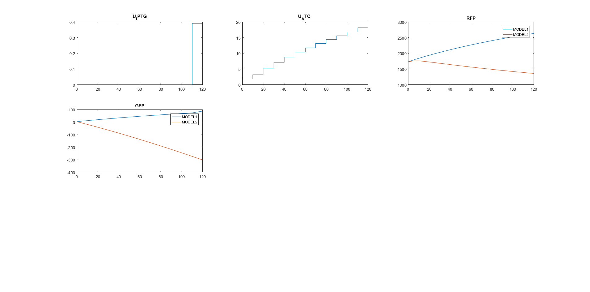

modelsAfterOED=OED4SBLdiscrimination(MODELS,sbl_config);
SBL_plotDiscriminationResult(modelsAfterOED);
set(gcf, 'Units', 'Normalized', 'OuterPosition', [0, 0.04, 1, 0.96]);
***********************************
AMIGO2, Copyright @CSIC
AMIGO2_R2017a [March 2017]
***********************************
*Date: 21-Aug-2019
------>Pre processing....this may take a few seconds.
------>Checking inputs....
n_exp
exp_type
n_obs
obs_names
obs
exp_y0
t_f
n_s
t_s
u_type
u_interp
n_steps
t_con
u_min
u_max
u
exp_data
error_data
noise_type
std_dev
------> WARNING message
You have selected to use pseudo experimental data,
however you are providing inputs.exps.exp_data{iexp}.
The inputs.exps.data_type is being changed to real.
------>Files generated....
***********************************
AMIGO2, Copyright @CSIC
AMIGO2_R2017a [March 2017]
***********************************
*Date: 21-Aug-2019
------>Pre processing....this may take a few seconds.
------>Checking inputs....
n_exp
exp_type
n_obs
obs_names
obs
exp_y0
t_f
n_s
t_s
u_type
u_interp
n_steps
t_con
u_min
u_max
u
exp_data
error_data
noise_type
std_dev
------> WARNING message
You have selected to use pseudo experimental data,
however you are providing inputs.exps.exp_data{iexp}.
The inputs.exps.data_type is being changed to real.
------>Files generated....
------------------------------------------------------------------------------
eSS R2016A - Enhanced Scatter Search
<c> IIM-CSIC, Vigo, Spain - email: gingproc@iim.csic.es
------------------------------------------------------------------------------
Initial Point (x_0): FEASIBLE SOLUTION. Objective function value: -1.6844e+06
Initial Pop: NFunEvals: 206 Bestf: -5.85478e+06 CPUTime: 2.046875 Var: 7.03891e+11
Iteration: 1 NFunEvals: 617 Bestf: -7.11526e+06 CPUTime: 6.250000 Var: 1.10164e+12
Iteration: 2 NFunEvals: 1034 Bestf: -9.01623e+06 CPUTime: 9.968750 Var: 8.08606e+11
Iteration: 3 NFunEvals: 1436 Bestf: -9.76668e+06 CPUTime: 14.468750 Var: 3.92664e+11
Call local solver: FMINCON
Initial point function value: -9766681.780766
Local solution function value: -1.6403e+07
Number of function evaluations in the local search: 1419
CPU Time of the local search: 3.399816 seconds
Iteration: 4 NFunEvals: 3272 Bestf: -1.6403e+07 CPUTime: 31.625000 Var: 2.39081e+12
Iteration: 5 NFunEvals: 3686 Bestf: -1.6403e+07 CPUTime: 35.828125 Var: 7.32502e+11
Iteration: 6 NFunEvals: 4102 Bestf: -1.6403e+07 CPUTime: 39.859375 Var: 6.60577e+10
Call local solver: FMINCON
Initial point function value: -15924473.135370
Local solution function value: -1.6403e+07
Number of function evaluations in the local search: 995
CPU Time of the local search: 2.328224 seconds
Maximum number of function evaluations achieved
Best solution value -1.6403e+07
Decision vector
1.00001e-07
1.83575
1.00002e-07
3.21
1.00002e-07
5.28418
1.00003e-07
7.14563
1.00005e-07
8.82139
1.00006e-07
10.3596
1.00009e-07
11.7914
1.00015e-07
13.1365
1.00026e-07
14.4081
1.00054e-07
15.614
1.00185e-07
16.7568
0.391646
18.1392
Best solution value -1.6403e+07
Decision vector
1.00001e-07
1.83575
1.00002e-07
3.21
1.00002e-07
5.28418
1.00003e-07
7.14563
1.00005e-07
8.82139
1.00006e-07
10.3596
1.00009e-07
11.7914
1.00015e-07
13.1365
1.00026e-07
14.4081
1.00054e-07
15.614
1.00185e-07
16.7568
0.391646
18.1392
CPU time 49.3438
Number of function evaluations 5098
